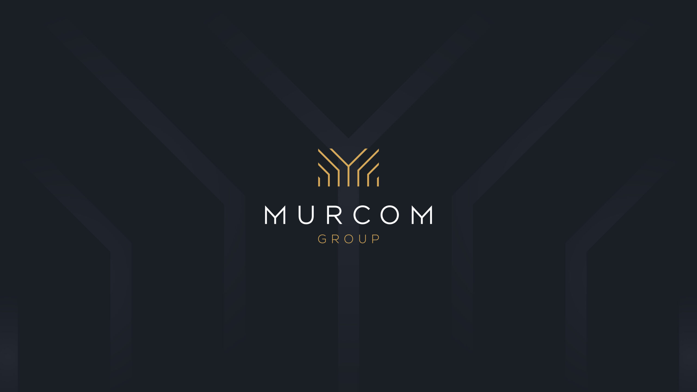
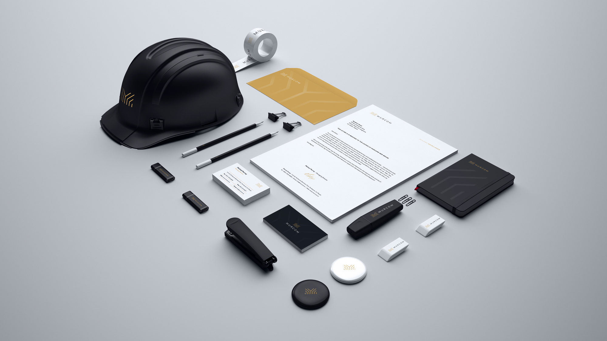
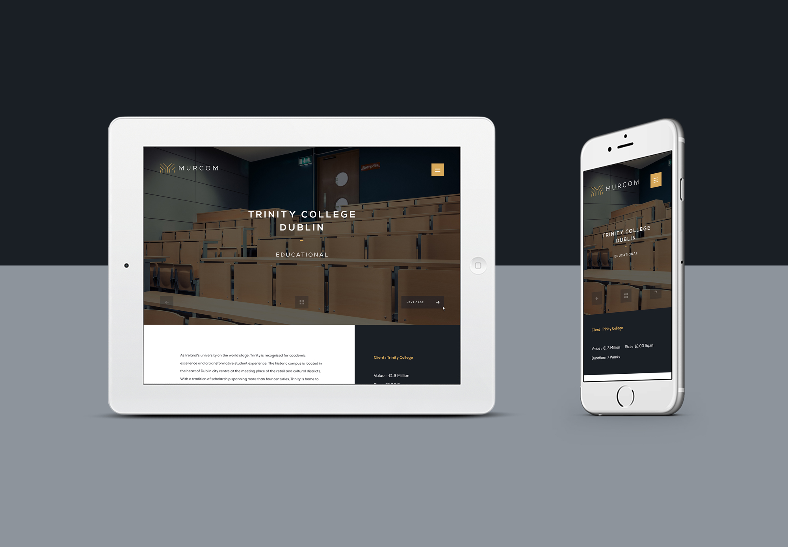
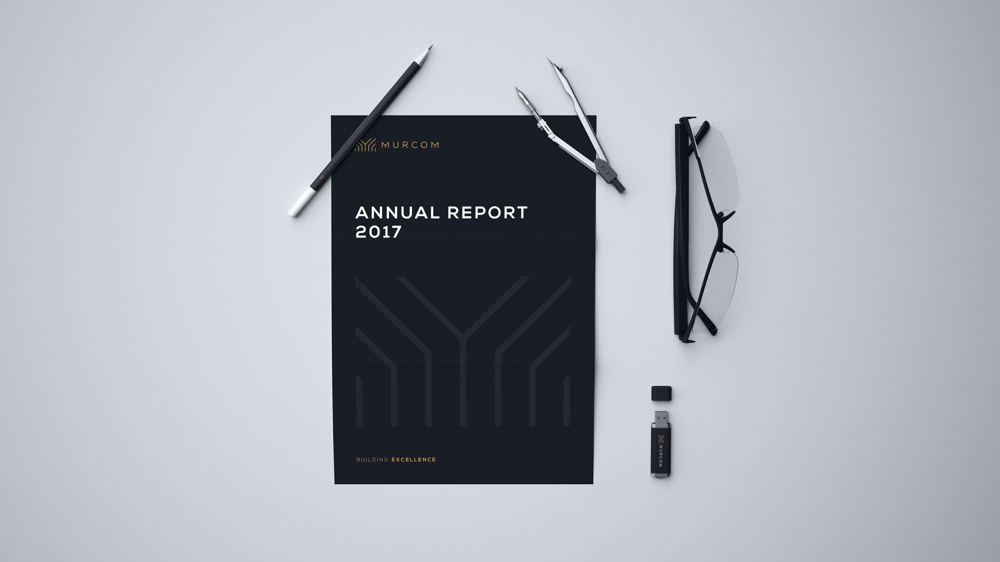

Work / 2020
Murcom Group
Building a Unique Brand
Murcom has over 30 years' experience in construction fit-out across medical, educational and commercial projects, collaborating with Ireland's leading architects and interior designers. I designed a new corporate identity and website that converts the company's mission and values into a brand worthy of its work.

A logo built like their buildings
The mark distils structure, elevation and growth, an architectural 'M' that also evokes a tree, symbolising natural, ecological principles beneath rising structural lines. A rich, upmarket palette suggests heritage, quality and pedigree, while macro imagery and fine lines convey a company dedicated to precision.

A distinctive digital presence
I produced a dynamic, professional website with commissioned photography, digitally enhanced to show clean form. The site is simple and direct, with subtle development touches that enrich the browsing experience, backed by a full digital marketing campaign and ongoing maintenance.

Results
Online traffic increased 200% within six months at a bounce rate under 10%, and contract enquiries grew 180% in the six months that followed, a brand and platform that communicate expertise, excellence and service.
